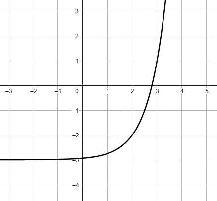

FILA B
Esercizio 1
Esercizio 1
Rappresentare il grafico delle seguenti funzioni. Spiegare
quale trasformazione lega ciascuna di esse alla funzione che la precede nella lista.
\[
\begin{align*}
\boldsymbol{\boxed{1}} \quad f(x) = 4^{x} \quad&\quad \boldsymbol{\boxed{2}} \quad g(x) = 4^{x + 3}
\\\\
\boldsymbol{\boxed{3}} \quad h(x) = 4^{\frac{x}{2} + 3} \quad&\quad \boldsymbol{\boxed{4}} \quad p(x) = 2
\cdot 4^{\frac{x}{2} + 3}
\end{align*}
\]
Esercizio 2
Risolvere l'equazione
\[
\dfrac{9^{x + 1} \cdot \sqrt[3]{3^{x - 1}}}{\left(3^{2x + 3}\right)^2} = \dfrac{1}{3}
\]
Esercizio 3
Stabilire la legge che definisce la funzione esponenziale \(f\) rappresentata nel seguente grafico

Scrivere successivemente la legge della funzione \(g\) il cui grafico è dato dalla dilatazione orizzontale
di fattore \(2\) del grafico di \(f\).
Esercizio 4
Trovare le soluzioni dell'equazione
\[
4^{x} - 6 + \dfrac{8}{4^{x}} = 0
\]